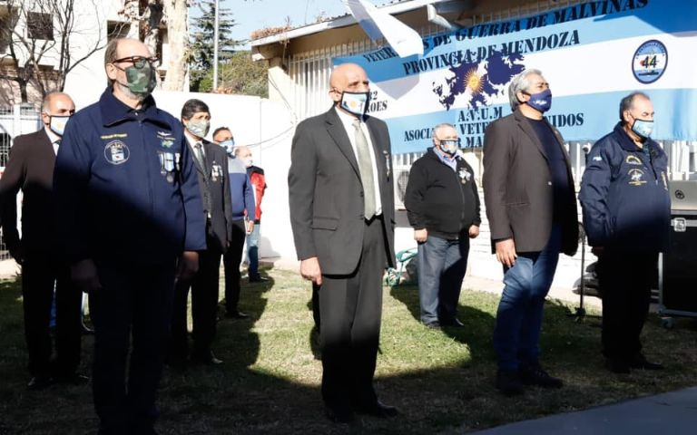
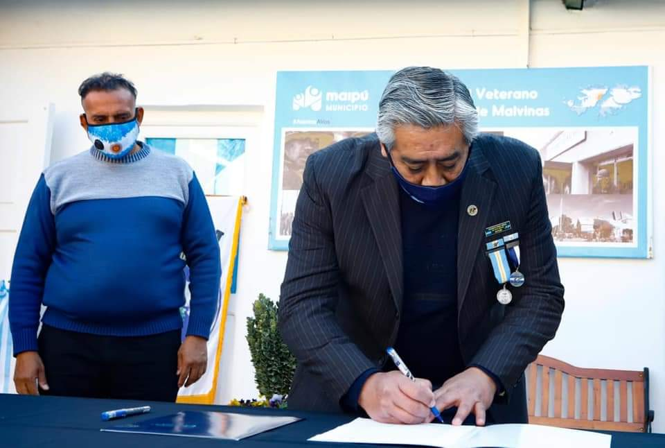
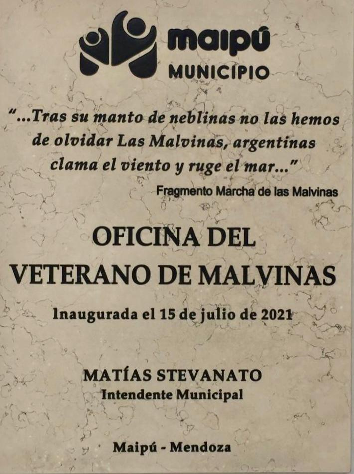

Historia del museo
A principio del 2021 se crea la Oficina del Veterano - Maipú - y al mismo tiempo se comienza a recopilar elementos y pertrechos con la idea de formar un museo que se convirtió, con un gran esfuerzo, en una realidad. Siendo inagurado el día 15 de julio de 2021.
Entidad sin fines de lucro comprometida con la comunidad y con el rescate de la memoria de los hechos ocurridos em el conflicto por la usurpacion de la Soberania de los territorios argentinos en el Atlántico Sur.

En la intendencia, cuyo edificio se encuentra ubicado en Patricias Argentinas 53, de Maipú, habrá una oficina para los Veteranos y un Museo de Malvinas en constante crecimiento. El comodato de las instalaciones, fueron firmados por el Sr. Matías Stevanatto intendente de Maipu y el Presidente de AVUM Sr. Jorge Adrián Navarrete y el secretario Sr. Julio Ernesto Arancibia.

Es el deseo de todos los Veteranos de Mendoza que sea un lugar de encuentro y sobre todo un espacio para contar las vivencias de los que participaron de la gloriosa Gesta de 1982.

Guerra de Malvinas.
La Guerra de Malvinas o conflicto del Atlántico Sur, fue un conflicto armado entre la Argentina y el Reino Unido desatado en 1982, en el cual se disputó la soberanía de las islas Malvinas, Georgias del Sur y Sandwich del sur.
¿Cómo comenzó?
En abril de 1982 tropas argentinas ocupan el puerto Stanley, bajo órdenes de la Junta Militar. Como respuesta, el gobierno británico desplegó una enorme fuerza expedicionaria que al cabo de 10 semanas de batalla desalojó a las fuerzas argentinas. La victoria británica precipitó la caída de la dictadura argentina y el inicio de la recuperación del Estado de derecho.
En la Guerra de Malvinas lucharon alrededor de 14 mil combatientes en las trincheras, aire y mar. También en la posguerra, los sobrevivientes pelearon otras batallas desde otras trincheras.
El retorno de los soldados de Malvinas luego de la derrota argentina en la guerra fue visto como una amenaza para las FFAA. Sus testimonios y su propio estado físico y psicológico podían contribuir a alimentar la indignación social y a profundizar el descrédito de la población ante la Juna Militar que había llevado al país a una guerra contra Gran Bretaña.
Durante los 74 días que duraron las batallas murieron 650 combatientes argentinos y 255 británicos, además de tres civiles.
.jpg)